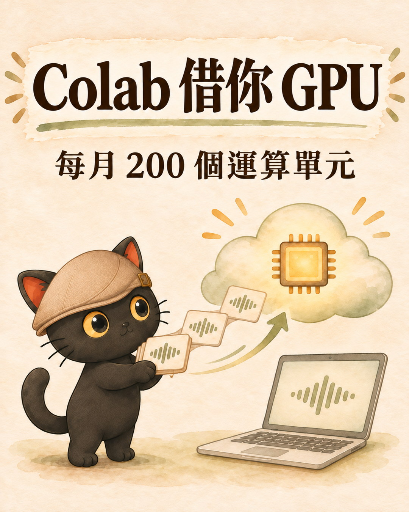

Google AI Pro 的訂閱裡附了兩份算力（可以拿來跑 AI 的運算額度）：Colab 的運算單元，等於跟 Google 借一台有 GPU 的電腦（GPU 是專門跑 AI 的顯示卡），拿來跑免費的開源 AI 模型；Flow 的點數，可以把一張圖變成一段動態影片。我拿這兩個實際做了一支 30.5 秒的直式短影音，這篇把怎麼做、踩過哪些坑、最後怎麼處理，連同失敗的片段和最後成功的那支，一起攤開。
- Colab 我實測了兩件事：AI 配音（Qwen3-TTS、Breeze-TTS-2 兩個開源模型）和把圖變影片（Wan2.2、HunyuanVideo）。配音能用；圖變影片 Wan2.2 做出來的我判定不能用，HunyuanVideo 沒跑完。
- Flow 一支 5 秒的影片扣 15 點。第一版拿 4:5 的圖（接近方形）丟進去，標題左右被裁掉；第二版改成一開始就生 9:16 的圖（手機直式全螢幕的比例），這版我說「可以喔」。
- Flow 的片接進剪輯台（我自己的網頁剪輯工具），配上朵拉（我的 AI 角色）的聲音，做成最後那支 30.5 秒的片。
- 這次做下來的分工：剪輯留在自己電腦；Colab 接會讓電腦卡、可以整批丟上去跑的工作；封面短動畫用 Flow。
- 有訂 Google AI Pro，但不知道裡面的 Colab 和 Flow 可以拿來做什麼的人
- 用自己電腦跑 AI 配音、AI 影片，跑到電腦很卡的人
- 想做直式短影音（Threads、IG、YouTube Shorts），想知道 AI 能幫到哪一步的人
- Colab 運算單元、Flow 點數各能做多少事的實測數字
- Flow 圖轉影片的操作步驟，和一開始就要生 9:16 圖的理由
- Flow 片接進剪輯台時改了哪些地方
- 一張花費推估表；要自己跑 Colab 的人，另有七個坑收在折疊區
- 可以直接貼給 AI 的一段話
- 先看成品：30.5 秒的直式短影音
- Google AI Pro 訂閱裡的兩份算力：Colab 運算單元與 Flow 點數
- 用 Colab 跑開源配音，電腦不用出力：Qwen3-TTS 與 Breeze-TTS-2 實測
- 用 Colab 跑開源圖轉影片：Wan2.2 失敗片段，HunyuanVideo 沒跑完
- 用 Flow 把圖變影片：4:5 圖被裁切，改生 9:16 才成功
- Flow 片接進剪輯台：從 23 秒無配音改到 30.5 秒定版
- 要自己跑 Colab 才需要看：網頁版的七個坑
- 一支短影音要花多少運算單元和點數（推估）
- 下一步：Colab CLI，讓 AI 用指令幫你開 GPU（還沒實測）
- 可以直接貼給 AI 的一段話
只想看成品，看第一段就好；想照著做，第五段是重點。寫著「想自己動手的人看這裡」的折疊區，是給要自己操作的人，不看也不影響讀懂。
一、先看成品：30.5 秒的直式短影音
這支片是 2026 年 11 月 15 日做完的，手機直式，長 30.5 秒，旁白是朵拉的聲音。開頭那段會動的封面，是 Flow 把輪播卡（我發社群用的圖卡）變成的動態影片；中間的數字頁、字卡是用程式畫的動畫，在剪輯台上跟配音、字幕、配樂組在一起。
影片在 YouTube：Google AI Pro 算力不用白不用 ↗
片裡講的內容只有兩件事，下一段先把這兩件事講清楚，後面再講怎麼做出來。
二、Google AI Pro 訂閱裡的兩份算力：Colab 運算單元與 Flow 點數

Colab：借 Google 的 GPU 跑開源模型
訂閱每個月有 200 個 Colab 運算單元。運算單元就是借 GPU 的費用，借越好的 GPU、借越久，扣越多。
我實測了兩種 GPU（型號叫 T4 和 L4）：T4 每小時大約用掉 1.15 個單元，L4 每小時大約 1.94 個。照 T4 算，200 個單元大約可以開 170 小時。
開源模型的意思是：模型本身免費，可以下載回來自己跑，缺的只是一台夠力的電腦。Colab 就是借你那台電腦。
Flow：把一張圖變成一段動態影片
訂閱每個月多送 1000 點 Flow 點數。Flow 是 Google 做影片的工具，丟一張圖進去，寫一段提示詞，它會把圖變成一段影片。
我用 Omni 1.2 Flash 模型，一支 5 秒的影片扣 15 點，大約 1 分鐘出片。1000 點大約可以做 66 支，全拿來做 5 秒片，合起來約 330 秒，也就是 5 分半的 AI 畫面。
免費的部分只能做 5 秒一段、720p。1080p 以上、4K、10 秒以上、延長影片，都要另外付費。
同一個模型也能不開 Flow 網頁，改用 Gemini API 叫（API 是讓自己的程式或工具直接呼叫 AI 的方式）。我用這篇文章的封面實測一支 5 秒影片，34.7 秒就出片，約 0.35 美元，封面上的中英文字都沒有跑掉。這筆是不是從訂閱每月送的 10 美元 API 額度扣，我還沒確認。
想自己動手的人看這裡：用 Gemini API 叫的細節
同一個 Omni 1.2 Flash 也能用 Gemini API 叫（模型 ID gemini-omni-1.2-flash，一段最長 15 秒）。官方定價頁換算 720p 約每秒 0.07 美元，5 秒約 0.35 美元。我用這篇文章的封面實測一支：16:9、720p、5 秒，34.7 秒就出片，回傳用量是輸出 28,960 tokens，照定價每百萬輸出 tokens 12 美元算，約 0.35 美元。封面上的中英文字都沒有跑掉。這筆是不是從訂閱每月送的 10 美元 API 額度扣，要到 Google Cloud 帳單頁看，我還沒確認。
- Google AI Pro 每月送的 10 美元 API 額度，怎麼領、怎麼用｜五個步驟、四個坑，含「預付額度已用完」怎麼解，我接到 Grok Bot 實測 這一段只講 Colab 和 Flow 兩個算力，那篇講訂閱附的 API 額度怎麼領、怎麼接到自己的工具
三、用 Colab 跑開源配音，電腦不用出力：Qwen3-TTS 與 Breeze-TTS-2 實測
我會想用 Colab，是因為：「有些任務 能丟雲端就丟雲端 要不然我電腦會卡很麻煩」。AI 配音就是這種工作。
這次是我的 AI（Claude）開網頁版 Colab 跑的，我在旁邊聽結果、下判斷。三組數字：
- Qwen3-TTS 念 5 句，用 T4：安裝 30 秒、下載並載入模型 58 秒，生成花 98.2 秒，做出 36.0 秒配音。
- 聯發科 Breeze-TTS-2 學我的聲音念 5 句，用 L4：每句 33 到 54 秒，合計 219 秒做出 25.7 秒配音。每念一句都要重新把模型叫起來一次，所以偏慢。
- 對照組：同一個 Breeze-TTS-2 在我自己的電腦（Mac mini）跑 7 句（不是 Colab）：模型只叫起來一次，合計 8 分 14 秒做出 31.4 秒配音。
換算一下：在我自己的 Mac mini 上，約每 1 秒配音要跑 16 秒；Colab L4 就算每句都重新叫模型，約每 1 秒配音 8.5 秒，還是比較快。而且是 Google 的電腦在跑，我的電腦不用出力。
想自己動手的人看這裡：模型版本
Qwen3-TTS 用的是 1.7B CustomVoice 版本。Breeze-TTS-2 在 Colab 是每句重新載入模型，在 Mac mini 本機是模型只載入一次。
最後這支片的旁白，我也試過用 Breeze 念（這次是在 Mac mini 本機跑，就是上面的對照組），參考音是「咪卡預選」那組聲音。聽完我說「這聲音不好聽」「用朵拉的」，所以定版改用朵拉的聲音，Breeze 那版沒有用。
定版用的朵拉聲音（Google 的 Gemini 語音），前三句：
- 想用自己的聲音做 AI 配音，該選哪個？｜Qwen3-TTS、Breeze-TTS-2、Gemini 克隆實測，台灣口音與混出新聲音的差別 這一段只講丟到 Colab 跑多快，那篇比較各家模型的口音、要準備什麼、在自己電腦怎麼跑
四、用 Colab 跑開源圖轉影片：Wan2.2 失敗片段，HunyuanVideo 沒跑完
Wan2.2：跑得出來，但我判定不能用
把圖變影片的開源模型，我先試 Wan2.2，用 L4：
- 下載並載入模型花 129 秒，模型檔有 31.4 GB。
- 2 秒的片要做 220 秒，3 秒的片要做 269 秒。
右邊是第 2 張卡做出來的 3 秒片。動作太大，卡片做到一半就不見了。我看完的判斷是：「都不行」。
封面短動畫這件事，後來改用 Flow 做。
想自己動手的人看這裡：版本與尺寸
用的是 Wan2.2-TI2V-5B，輸出 640×800。
HunyuanVideo 1.5：模型下載到一半，Colab 自己斷線
第二個試的是 HunyuanVideo 1.5，一樣是把圖變影片的開源模型。它卡了兩次：
- 第一次卡住：同一台 Colab 電腦的記憶體還被前一個 Wan2.2 佔著，新的模型動不了。處理方式是把舊的程式關掉再重跑。
- 第二次模型下載到 13 GB 時，Colab 判定我閒置太久，自己斷線。我是讓程式在背景跑，Colab 還是把它算成閒置。斷線之後沒有再重連，所以沒再扣單元。
要重測的話，改用下面第九段講的 Colab CLI，或讓 Colab 的網頁分頁一直保持有動作。
想自己動手的人看這裡：卡住時的細節
這次跑的是 480p 圖轉影片。第一次：前一個程式佔著 32 GB 記憶體，只剩 10 GB，顯示卡用量一直是 0%。第二次：我是在 Colab 的終端機用 nohup（讓程式在背景一直跑的指令）跑，這樣也被算成閒置。
五、用 Flow 把圖變影片：4:5 圖被裁切，改生 9:16 才成功
失敗片段：拿 4:5 的輪播卡直接丟進去
第一版我拿現成的 4:5 輪播卡丟進 Flow，影片比例設 9:16。Flow 把圖放大裁切去填滿直式畫面，標題左右兩邊被切掉。
中間還試過一個補救：在圖的上下各補一塊翻過來的鏡像，湊成 9:16。結果標題和咪卡被翻進畫面，也不能用。
看到第一版，我的反應是：「你一開始 圖 就該 9;16 喔」。
成功片段：一開始就生 9:16 的圖
第二版請 AI（Codex）重新生兩張圖，生圖時就指定 9:16 直式（1080×1920），上下各留約 12% 的空白紙底。
提示詞也加了兩件事：中文字形保持原樣、不可變形換字；動作可以大、標題可以跟著節拍彈跳。這是我的要求：「動作幅度可以大呀或者字體 可以跳動呀」，要有「設計感」。
第二版兩支我看完說：「可以喔」。Flow 片剛開始的畫面，標題還沒長完，所以接進剪輯台時從第 1.5 秒開始用。同一批片子也把標題裁掉、裁成方形，放進數字頁的卡片位置（下一段有對照圖）。
Flow 操作步驟
右上設定：影片比例 9:16、數量 x1、模型 Omni 1.2 Flash。「生成前確認」保留「一律」，每次會先告訴你扣幾點。
4:5 的圖會被放大裁切。提示詞寫明中文字形保持原樣、不可變形換字。
送出後它會問「要開始生成嗎？這會消耗 15 點」。只按「核准」，不要按「一律核准」。
打開影片，右上下載鈕選 720p。1080p 以上、4K、10 秒以上、延長都要另外付費。
我的短影音不要它的聲音：「我不用聲音」「因為我會另外 配音配樂」。接剪輯台時把音效拿掉。
開頭當封面整片放；後面各段的卡片也放這兩支動態影片，裁掉標題成方形。細節在下一段。
這次 Flow 一共生了三支，各 5 秒、各扣 15 點，共 45 點。
六、Flow 片接進剪輯台：從 23 秒無配音改到 30.5 秒定版
Flow 片做好之後，我跟 AI 說：「你先做一隻好不好」「我想看你把一隻短影音完整做完」。剪輯台是我自己的網頁剪輯工具，在我自己的電腦上跑。第一版做出來是 23 秒、沒有配音；中間改了幾版，最後是 30.5 秒、朵拉配音的定版。
第一版還有三個小問題，都是抽幾格畫面出來檢查看到的：封面剛開始標題還沒長完，改成從 Flow 原片 1.5 秒處開始剪；標題字太細，換成粗的字型；卡片放大後蓋住大數字，縮小往下移。
匯出也要算時間。剪輯台在我的 Mac mini 上匯出 23 秒的直式片，三次分別花 314、260、214 秒，約每 1 秒成片要 9 到 14 秒。照這個推估，一分鐘的片要 9 到 14 分鐘。
想自己動手的人看這裡：字型與匯出規格
標題字原本用 Songti TC，改成 Songti SC Black。匯出規格是 1080×1920、每秒 30 格。
- 用 Claude Code 剪影片，配樂從哪來、怎麼卡在拍子上？｜Suno 免費版下載限制、AI 配旁白一分鐘多少錢、免費音色庫與卡點對拍實測 這一段只講 Flow 片接進剪輯台的坑，那篇講配樂從哪裡來、怎麼跟畫面卡拍子
七、要自己跑 Colab 才需要看：網頁版的七個坑
這段給要自己跑 Colab 的人，只想用 Flow 可以跳過。其中兩件就是上面 HunyuanVideo 卡住的原因：Colab 的網頁分頁要一直開著、保持有動作，閒置太久會自己斷線；同一台連跑兩個模型，要先把前一個關掉。
想自己動手的人看這裡：七個坑與處理方式
- 打字進儲存格，第一行常被吃掉：長程式改從頁面編輯器直接寫入。
print(...); !指令寫在同一行會語法錯誤：驚嘆號開頭的指令要獨立一行。- Breeze 的安裝清單把 PyTorch 換成 2.9.1，核心會重啟：同一格後面的程式不會跑，要另外補
torchvision==0.24.1。 - 在儲存格裡包一層程式去跑，看不到中途進度：改用 Colab 左下的終端機跑
nohup python job.py > job.log 2>&1 &，再用tail job.log看。 - 同一台連跑兩個模型，第二個卡住：前一個還佔著記憶體。換模型前先重啟核心，或每個模型用獨立程式跑、跑完就結束。
- 下載好幾個檔案時，Chrome 卡在「允許多個下載」：檔案停在下載資料夾裡的暫存檔，暫存檔內容是完整的，複製出來就能用。
- 閒置太久會自己斷線：在終端機背景跑也算閒置。分頁要保持有動作，或改用 Colab CLI。
八、一支短影音要花多少運算單元和點數（推估）
這張表是用上面的實測數字推估的，不是實際跑過一分鐘片的結果。
| 要做什麼 | Flow 點數 | Colab 運算單元 |
|---|---|---|
| 開頭 5 秒動態封面 | 1 支 15 點，1000 點約 66 支片的封面 | 用 Wan2.2 在 L4 生 5 秒約 0.3 單元（從 2 秒、3 秒的實測時間外推），但效果我判定不行 |
| 整支 1 分鐘都用 AI 生成畫面 | 免費只能 5 秒一段，要 12 段接起來＝180 點，1000 點約 5 支（重生一次就再扣） | Wan2.2 做 12 段約 1 小時 15 分、約 2.5 單元 |
| 剪輯、匯出（字卡、動畫、字幕） | 不用點數 | 自己電腦做得完。丟 Colab 要先上傳素材、裝瀏覽器和影片處理工具，短片不划算，一分鐘以上或一次很多支才值得，還沒實測 |
這次做下來的分工：剪輯台本身留在自己電腦，Google 的算力只接前段可以整批丟上去跑的工作；封面短動畫先用 Flow。
九、下一步：Colab CLI，讓 AI 用指令幫你開 GPU（還沒實測）
網頁版 Colab 要一格一格貼程式、分頁不能關，下載還會卡。Google 在 2026 年 6 月出了官方的 Colab CLI，一個用打字下指令操作 Colab 的工具（在電腦的「終端機」視窗裡打）。用它就能開 Colab 的 GPU、把自己電腦上的程式送上去跑、搬檔、跑完關機，不用開著瀏覽器分頁。Claude Code 這類 AI 助理也能直接叫它。扣的一樣是帳戶裡的運算單元。
我給自己的 AI 定的規矩：開跑前先查餘額、確認有登入，沒登入就停下來叫我，不要讓它卡在登入流程；GPU 只准用 T4 或 L4，要用 A100、H100 這兩種型號先問我。
想自己動手的人看這裡：Colab CLI 指令與官方提醒
工具在 GitHub 上的 googlecolab/google-colab-cli，查證時是 0.8.0 版，只支援 Linux 和 macOS。照官方文件整理，有產出檔（音檔、影片）時的流程：
| 要做什麼 | 指令 |
|---|---|
| 安裝 | uv tool install google-colab-cli |
| 先看餘額、確認有登入 | colab usage |
| 開一台 GPU，一定要取名字 | colab new -s 名字 --gpu L4 |
| 裝套件 | colab install -s 名字 -r requirements.txt |
| 上傳素材 | colab upload -s 名字 本機 遠端 |
| 送本機程式上去跑 | colab exec -s 名字 -f job.py |
| 拿回成品 | colab download -s 名字 遠端 本機 |
| 關機（不關會一直扣） | colab stop -s 名字 |
官方文件裡提醒的幾件事（這段給會用終端機，或讓 AI 幫你操作終端機的人）：
- 第一次登入要本人在瀏覽器按同意。給 AI 無人值守用，官方建議改用另一種登入方式（
--auth=adc），那一步一樣要本人登入，權限範圍比較大，憑證不要複製到別處或貼進對話。 --gpu打錯字會默默變成 A100。開 GPU 回 400 錯誤，代表帳戶沒有那個額度，改 T4 或 CPU。- 中途出錯也要跑
colab stop。用colab run跑一次性工作的話，沒加--keep會自己關機。
前面講的「先查餘額、確認有登入」，就是開跑前先跑 colab usage。
- 我的 Server 架在哪裡？｜混合式與全雲端兩套架構，一台 Mac mini 當本機工作中樞 這一段只講把會卡電腦的 AI 工作借 Colab 跑，那篇講整套工作環境本機和雲端怎麼分
十、可以直接貼給 AI 的一段話
如果你用的 AI 工具能幫你操作瀏覽器（例如 Claude Code 接上 Chrome），想讓它幫你用 Flow 把一張圖做成直式動態影片，可以直接貼這段給它（括號換成你自己的）：
我要用 Google Flow 把一張圖做成直式動態影片 圖：（你的圖檔） 先確認這張圖是不是 9:16，不是的話先停下來告訴我，不要自己裁切或補邊 Flow 設定：影片比例 9:16、數量 x1、模型 Omni 1.2 Flash，生成前確認保留「一律」 提示詞要寫：中文字形保持原樣、不可變形換字；（你要的動作，例如標題跟著節拍彈跳） 送出後問我要不要扣點，我說可以你再按「核准」，不要按「一律核准」 下載選 720p 原始大小 做好之後抽幾格給我看，標題有沒有被切到、字有沒有變形
- Google AI Pro 每月送的 10 美元 API 額度，怎麼領、怎麼用 同一個訂閱裡的第三份額度，接到自己的工具用
- 想用自己的聲音做 AI 配音，該選哪個？ 旁白要用自己的聲音時，各家模型怎麼選
- 用 Claude Code 剪影片，配樂從哪來、怎麼卡在拍子上？ 片子做好之後，配樂怎麼跟畫面對拍
- 我的 Server 架在哪裡？ 本機和雲端整體怎麼分工
- 我怎麼叫 AI 幫我做摘要影片？｜兩小時辯論變三分鐘懶人包，我下的提示詞與三個坑 往後：另一支用 AI 做的影片，有提示詞和三個坑
每個月兩場免費線上講座
主題輪流，場次會先在 LINE 社群公布。
每個月兩場免費講座。